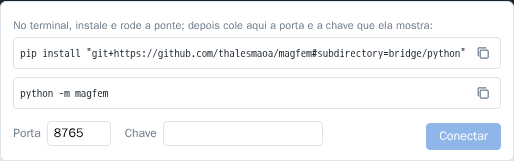

Ponte local (Python)
O MagFEM roda no navegador, mas pode ser controlado por scripts no seu computador: mudar variáveis, resolver, ler resultados e remontar a geometria, enquanto você vê o modelo mudar ao vivo. Isso abre caminho para varreduras de parâmetros, otimização e acoplamentos que o app não tem (mecânica, térmica…).
Como uma página web não pode receber conexões, um programa pequeno na sua máquina faz a ponte: a ponte local
(python -m magfem). A página se conecta a ela por WebSocket, e os scripts falam com ela por HTTP.
script (Python, Matlab, Julia, curl…) ──HTTP──▶ ponte (127.0.0.1:8765) ◀──WebSocket── página do MagFEM
Instalar
Precisa de Python 3.9 ou mais novo; o pacote só usa a biblioteca padrão.
pip install "git+https://github.com/thalesmaoa/magfem#subdirectory=bridge/python"
Para atualizar: pip install -U "git+https://github.com/thalesmaoa/magfem#subdirectory=bridge/python".
Conectar
Num terminal, rode a ponte. Com
--keyvocê escolhe a chave (sem ela, uma chave nova é gerada a cada vez):python -m magfem --key minha-chave
No app, clique em Script local (barra de status, embaixo à direita), confira a porta (8765) e cole a chave. O app lembra a última porta e chave.

O terminal avisa que a página conectou e abre o console
magfem>.
O console no terminal
Com a página conectada, python -m magfem vira um console ligado ao app, como o console da web:
MagFEM bridge 1.0.3 em http://127.0.0.1:8765
No app: clique em 'Script local', porta 8765, chave: minha-chave
Esperando a página conectar… (Ctrl+C encerra)
● Página do MagFEM conectada. Digite comandos do console (help() lista; Ctrl+D sai).
Scripts em outro terminal: mf = magfem.connect(key="minha-chave")
magfem> g.circle((0, 0), r=5)
"c4"
magfem> g.nao_existe()
✗ Comando desconhecido "nao_existe" — help() lista os comandos
Tab completa comandos, ids e variáveis (as sugestões vêm da página);
↑ repete comandos; Ctrl+D sai; Ctrl+C encerra a ponte;
o prompt só aparece com a página conectada; se ela cair, o console espera a reconexão;
comandos enviados por scripts aparecem marcados com
[script].
Use --no-console para só a ponte, sem o console.
Scripts em Python
Com a ponte rodando num terminal, um script em outro terminal se conecta com a mesma chave:
import magfem
mf = magfem.connect(key="minha-chave") # espera a página conectar
mf.set_var("I", "5") # variável do projeto
mf.solve() # gera a malha se preciso, resolve e espera
print(mf.result("Bobina_L")) # número de uma variável de resultado
print(mf.results()) # {nome: (valor, unidade)}
t, i = mf.series("Bobina_I") # transitório: curva no tempo
mf.run('g.circle((0, 0), r=5)') # qualquer linha do console (ou várias, separadas por \n)
Sem uma ponte já rodando, magfem.connect() sobe uma dentro do próprio script e mostra a porta e a chave.
Método |
Faz |
|---|---|
|
conecta (ou sobe a ponte) e espera a página |
|
executa linhas do console; devolve o valor da última |
|
|
|
resolve e espera terminar |
|
valor de uma variável de resultado |
|
|
|
|
|
|
Erros
Um comando que falha no app levanta magfem.BridgeError, com a mensagem e a linha que falhou. Com timeout, a
espera pela página também termina nesse erro:
import magfem
try:
mf = magfem.connect(key="minha-chave", timeout=60)
mf.run("g.circle((0, 0), r=5)")
mf.solve()
print(mf.result("Fx"))
except magfem.BridgeError as e:
print("MagFEM:", e)
s.solve() e m.generate() terminam antes da linha seguinte começar, então um script pode encadear
comandos sem esperar à mão.
Segurança
A ponte escuta só em
127.0.0.1(a sua máquina).Só aceita WebSocket de páginas do MagFEM (thalesmaia.com ou localhost).
Cada comando HTTP precisa da chave no cabeçalho
X-MagFEM-Key. Não existe chave vazia: sem ela, qualquer programa da sua máquina, ou uma página maliciosa aberta no navegador, poderia mandar comandos.
HTTP direto
Qualquer linguagem que fale HTTP pode usar a ponte. Veja Matlab, Julia e HTTP.